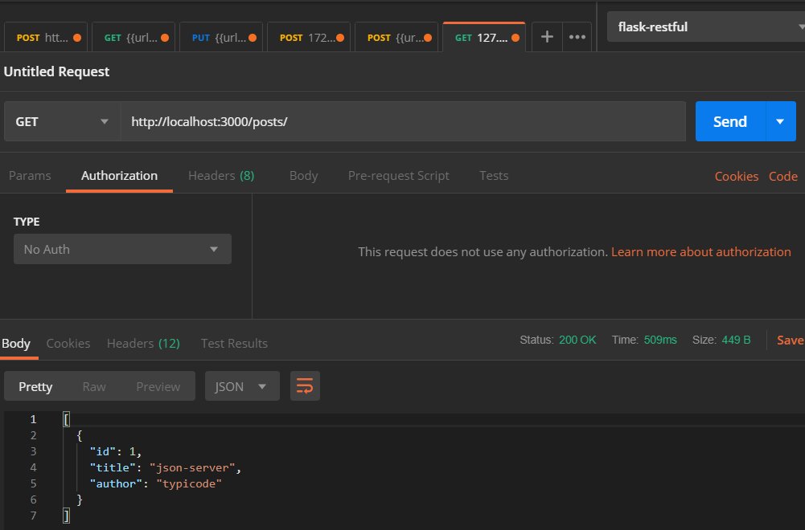
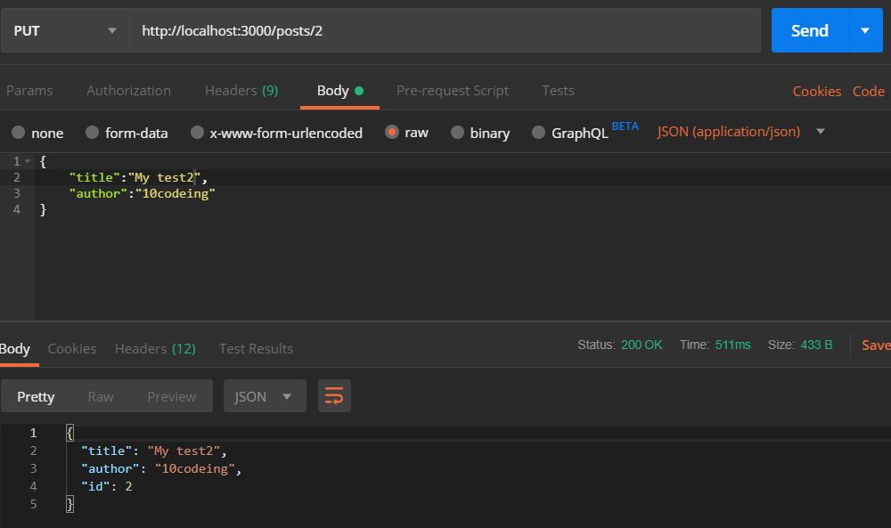
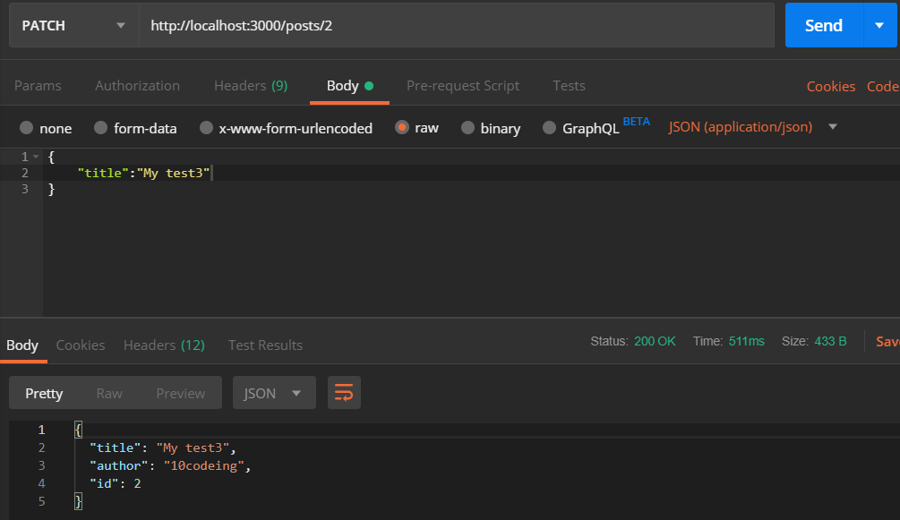
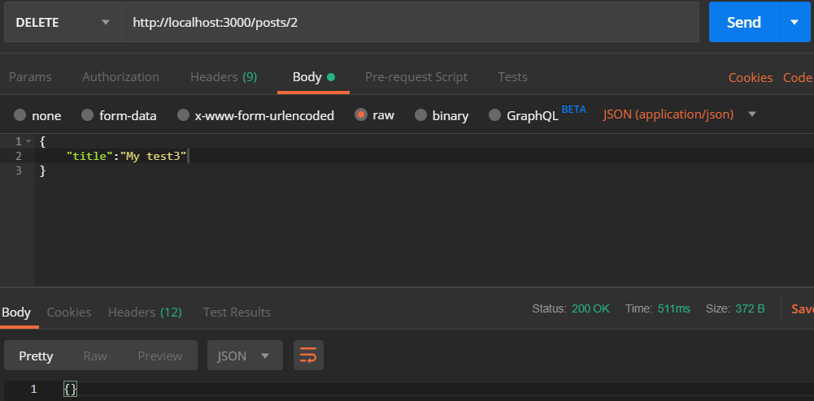

前言
因為在開發網頁時，後端的程式不一定已經完成這時可以前端可以來架設一個簡單的json的服務器，來測試前端的顯示資料是否正確，因為現在的資料傳送和接收都是以json為主
在專案中使用 json-server
來到 json-server 的 GitHub 查看如何使用。
下載json-server
使用步驟如下：
- 如果是新的專案而且沒有package.json檔
- 輸入
npm init建立package.json檔
- 輸入
- 安裝json-server有全域和local
- 全域
npm install -g json-server - local
npm install json-server --save-dev注意目前無運行
- 全域
我是建立一個全新的專案，獨立來測試下次，知道如何安裝和使用就可以使用下之後的Angular專案，先來建立專案資料放在下面的Test_Json_server
建立db.json
接者新增db.json檔，內容可先複製官網範例進行參考：
1 | { |
在終端機輸入json-server db.json運行json-serve,等候呼叫API
測試JSON Server
在vscode的package.json中可以修改scripts來執行json-server如下加入"mock-server": "json-server --watch db.json"
1 | { |
在終端來打入npm run mock-server 即可執行，可以打開瀏覽器來看有無成功http://localhost:3000 會出現整個 JSON Server 主控頁面
GET(取得資料)
開啟Postman選取GET並在網址列輸入http://localhost:3000/posts後Send送出，你會發現成功取得回傳資料。

POST(新增資料)
開啟Postman選取POST並在網列輸入http://localhost:3000/posts 接下來是要放入POST的內容，Body>raw>選擇JSON(applocation/json)，並將所有要新增的資料寫成JSON格式在下面空白處如下圖(id沒輸入沒關系系統會幫你自動遞增產生)，最後再點選Send送出，最下面就會回傳你的新增結果囉！
1 | { |

PUT(更新完整資料)
開啟Postman選取PUT並在網址列輸入http://localhost:3000/posts/2 有沒有發現網址列最後出現了一個數字，沒錯這就是你要俢變的id,接下來是要放人修改的內容(全部欄位必放)，Body>raw>選擇JSON(appliction/json),將所有要新增的資料寫成JSON格式在下面空白俿如下圖，最後再點選Send送出，最下面就會回傳你的修改結果囉！
使用PUT要注意的是送出修改內容時要將無修改的資料一樣寫上去不然會被洗掉哦！
1 | { |

PATCH(更新部分資料)
步驟跟PUT一模一樣開啟Postman選取PATCH並在網址列輸入http://localhost:3000/posts/2,再來放入修改的內容(可只放修改的欄位),Body>raw>選擇JSON(applocation/json),將所有要新增的資料寫成JSON格式在下面空白處如下圖，最後再點選Send送出，最下面就會回傳你的修改結果囉！
使用PATCH就能解決PUT的問題可以只修改部分的資料。

DELETE(刪除資料)
開啟Postman選取PUT並在網址列輸入 http://localhost:3000/posts/2，網址最後面的id就是你要刪除的那筆資料，最後再點選Send送出，資料就被成功的刪除囉！

自訂路由(注意)
如果有自訂路由，目前在PUT,PATCH會有問題
大多時候json-server的預設範例是滿足了我們的。
舉例來說，我想要的Mock的API路徑希望是：
1 | /api/v1/issues/analysis?gid=:gid&sDate=:sDate&eDate=:eDate |
這時候就需要自訂路由了！
新增route.json檔案
1 | { |
上面的意思就就是當調用/api/posts時，重定向到/posts
接著在裡面貼上官網的範例：
1 | { |
如上設定後，對應結果如下:
- 輸入
/api/posts# –> /posts - 輸入
/api/posts/1# –> /posts/1 - 輸入
/posts/1/show# –> /posts/1 - 輸入
/posts/javascript# –> /posts?category=javascript - 輸入
/articles?id=1# /posts/1
成出規則後，修改route.json變成我們要的結果
1 | { |
自訂配置
為了更方便使用，也可以自行配罝json-server
新增json-server.json
1 | { |
因為只有使用到這些配置，更多配置請參考官方 GitHub 文件。
配置已經完𨮄，最後在package.json修改以下指令
1 | "scripts": { |
之後只需要執行npm run mock-server即可運行以上這些配置囉